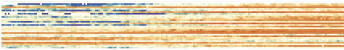
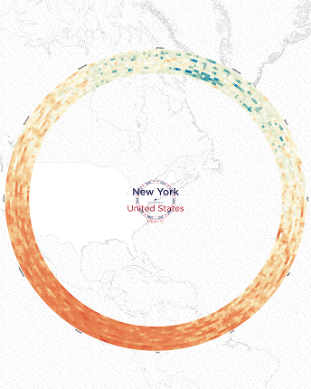
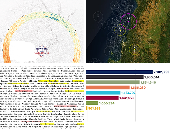
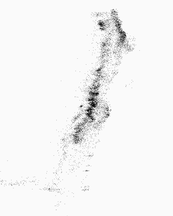
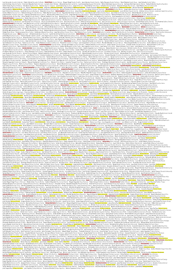

Temperaturas históricas



Consiste en adquirir datos desde archivos o redes; analizar para estructurarlos en categorías; filtrar para conservar solo los relevantes; extraer patrones mediante métodos estadísticos o minería de datos; representar en formas visuales como gráficos o listas; refinar para mayor claridad visual; y diseñar interacción para manipularlos y controlar su visualización.



